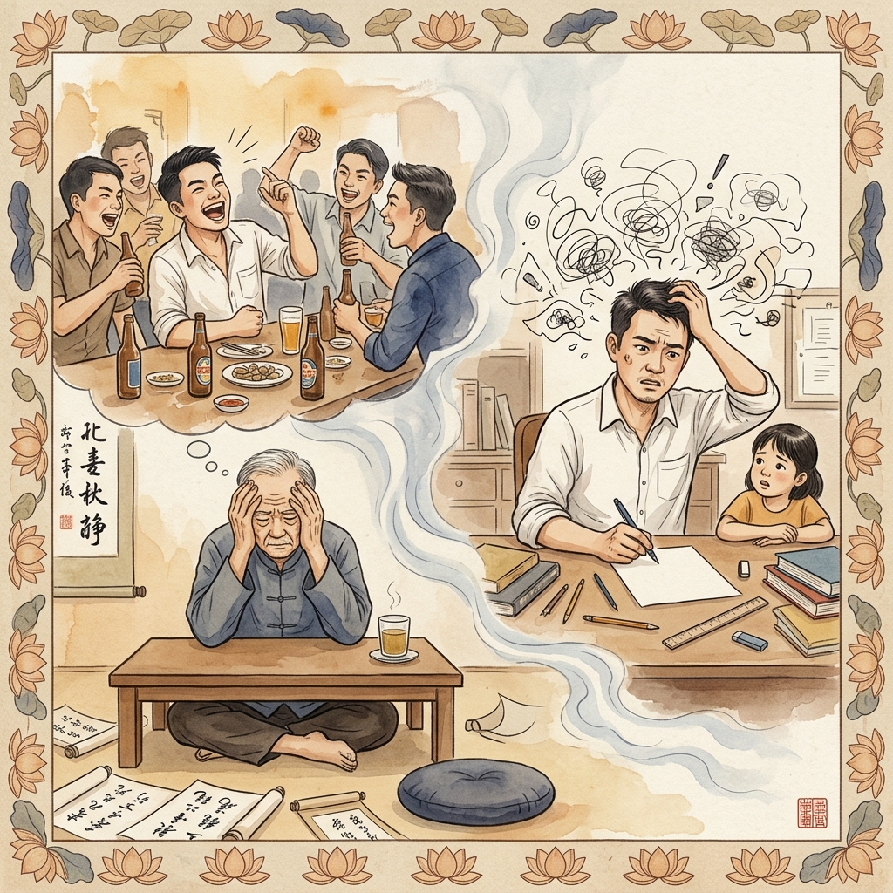
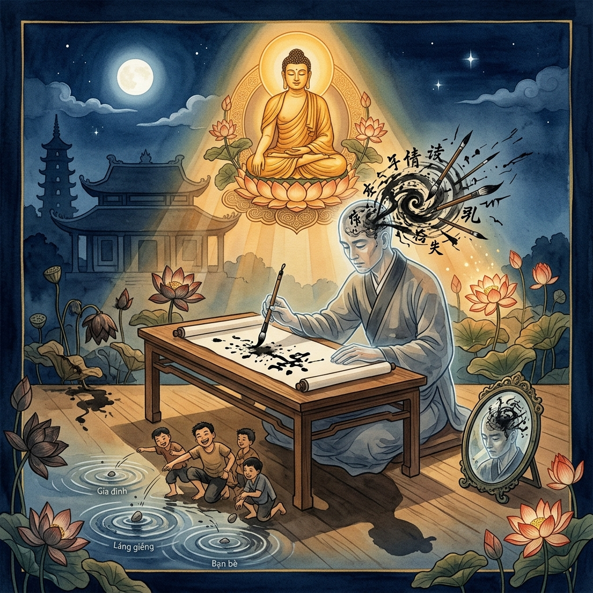
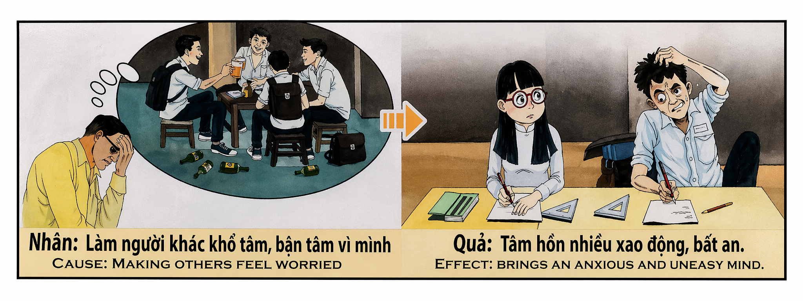

La Tinta que No EscribeThe Ink That Won't WriteL'Inchiostro che Non Scrive无法落笔的墨水الحبر الذي لا يكتبЧернила, которые не пишутDie Tinte, die Nicht SchreibtL'Encre qui N'Écrit Pas書けぬ墨A Tinta que Não EscreveNét Mực Không Thành
Nuestra paz mental no es un derecho gratuito, sino un espejo de la tranquilidad que hemos sembrado en los demás. Quien, en su juventud o descuido, perturba el sueño de sus padres, siembra angustia en quienes le aman o rompe la calma del hogar con su egoísmo, está hipotecando su propia capacidad de concentración futura. El karma de la preocupación ajena se manifiesta años después como un alma inquieta, una mente que se dispersa como el humo y un corazón que, incluso en el silencio más absoluto, no logra encontrar el reposo necesario para cumplir su propósito de vida. Our mental peace is not a free right, but a mirror of the tranquility we have sown in others. Whoever, in their youth or carelessness, disturbs their parents' sleep, sows anguish in those who love them, or breaks the calm of the home with their selfishness, is mortgaging their own future capacity for concentration. The karma of causing others worry manifests years later as a restless soul, a mind that scatters like smoke, and a heart that, even in total silence, cannot find the rest needed to fulfill its life purpose. La nostra pace mentale non è un diritto gratuito, ma uno specchio della tranquillità che abbiamo seminato negli altri. Chi, nella sua giovinezza o trascuratezza, turba il sonno dei suoi genitori, semina angoscia in coloro che lo amano o spezza la calma della casa con il suo egoismo, sta ipotecando la propria futura capacità di concentrazione. Il karma della preoccupazione altrui si manifesta anni dopo come un'anima inquieta, una mente che si disperde come fumo e un cuore che non riesce a trovare il riposo necessario per compiere il proprio scopo di vita. 我们的内心平静并非天赋权利，而是我们播种给他人安宁的镜像。若在年少无知时扰乱父母的睡眠，在爱人心中撒下焦虑，或因自私破坏家庭的宁静，便是抵押了自己未来的专注力。扰动他人心境的业力，多年后会化作浮躁的灵魂、如烟雾般涣散的思想，以及在绝对静谧中也无法找到栖息之所的心灵，使其难以实现人生的使命。 إن سلامنا النفسي ليس حقاً مجانياً، بل هو مرآة للطمأنينة التي زرعناها في الآخرين. من يقلق راحة والديه في شبابه أو إهماله، أو يزرع القلق في نفوس من يحبونه، أو يكسر هدوء البيت بأنانيته، فإنه يرهن قدرته المستقبلية على التركیز. كارما إقلاق الآخرين تظهر بعد سنوات كروح قلقة، وعقل يتشتت كالدخان، وقلب لا يجد الراحة اللازمة لتحقيق هدفه في الحياة حتى في أحلك السكون. Наш душевный покой — это не врожденное право, а отражение спокойствия, которое мы подарили другим. Тот, кто по неосторожности тревожит сон родителей, сеет тревогу в сердцах любящих или нарушает тишину дома своим эгоизмом, закладывает свою будущую способность к концентрации. Карма чужого беспокойства проявляется спустя годы как беспокойная душа и разум, рассеивающийся как дым. Unser Seelenfrieden ist kein kostenloses Recht, sondern ein Spiegel der Ruhe, die wir in anderen gesät haben. Wer in seiner Jugend den Schlaf seiner Eltern stört, Angst in denen sät, die ihn lieben, oder die Ruhe des Hauses durch Egoismus bricht, verpfändet seine eigene künftige Konzentrationsfähigkeit. Das Karma der Sorge anderer manifestiert sich Jahre später als unruhige Seele und ein Geist, der wie Rauch verfliegt. Notre paix mentale n'est pas un droit gratuit, mais le miroir de la tranquillité que nous avons semée chez les autres. Celui qui trouble le sommeil de ses parents, sème l'angoisse chez ceux qui l'aiment ou brise le calme du foyer par son égoïsme, hypothèque sa propre capacité de concentration future. Le karma de l'inquiétude d'autrui se manifeste des années plus tard comme une âme errante et un esprit qui se dissipe comme de la fumée. 私たちの心の平安は無償の権利ではなく、他者に与えた安らぎの鏡です。若さゆえの不注意で両親の眠りを妨げ、身勝手さで家庭の平穏を壊す者は、将来の自らの集中力を担保に入れているのです。他者を心配させたカルマは、後に落ち着きのない魂、煙のように散る思考、そして人生の目的を果たすために必要な休息を見出せない心として現れます。 A nossa paz mental não é um direito gratuito, mas um espelho da tranquilidade que semeamos nos outros. Quem, na sua juventude ou descuido, perturba o sono dos pais, semeia angústia naqueles que o amam ou quebra a calma do lar com o seu egoísmo, está a hipotecar a sua própria capacidade de concentração futura. O karma da preocupação alheia manifesta-se anos depois como uma alma inquieta e uma mente que se dispersa como fumo. Sự bình an trong tâm hồn không phải là một quyền lợi hiển nhiên, mà là tấm gương phản chiếu sự an yên ta đã gieo rắc cho người khác. Ai lúc trẻ dại làm cha mẹ mất ngủ, gieo lo âu cho người thân, chính là đang thế chấp khả năng tập trung của mình sau này. Nghiệp quả của việc làm người khác lo âu sẽ hiện hình năm tháng sau đó như một linh hồn bất an, một tâm trí tán loạn như khói bay.
El alma humana es como un estanque de agua clara; cada vez que arrojamos una piedra de preocupación en el corazón de otra persona, el oleaje resultante regresa inevitablemente a nuestra propia mente. No se puede robar el descanso de un padre o una madre y esperar que el universo nos regale la serenidad cuando la necesitemos para estudiar, trabajar o crear. La incapacidad de concentrarse, el "ruido mental" constante y la ansiedad sin causa aparente son, a menudo, los ecos de las tormentas que provocamos en los corazones que solo querían amarnos.
Cuando un joven sale de noche sin avisar, se entrega a vicios que causan desvelo a sus mayores o ignora las lágrimas de quienes dependen de su bienestar, está fragmentando su propia psique. Cada minuto de angustia que causamos es una "astilla" que se clava en nuestro futuro silencio. El karma no es un castigo externo, sino una redistribución de la energía: si quitamos paz, perdemos paz. Por eso, muchos se preguntan por qué no pueden encontrar su Ikigai o por qué su mente salta de un pensamiento a otro como un mono inquieto, sin comprender que están viviendo el resultado de las noches que otros pasaron en vela por su culpa.
La reconciliación con este karma comienza con el perdón y el servicio. Para recuperar la capacidad de enfocar la mente, debemos primero convertirnos en guardianes de la paz ajena. Solo cuando empezamos a cuidar el descanso de los demás, el universo permite que las aguas de nuestra propia mente vuelvan a calmarse. El propósito de vida solo se revela en un espejo que no esté empañado por el aliento de la preocupación que causamos en el pasado.
The human soul is like a clear pond; every time we throw a stone of worry into someone else's heart, the resulting ripples inevitably return to our own mind. One cannot steal the rest of a father or mother and expect the universe to gift us serenity when we need it to study, work, or create. The inability to concentrate, constant "mental noise," and anxiety without apparent cause are often the echoes of the storms we provoked in hearts that only wanted to love us.
When a young person goes out at night without warning, indulges in vices that keep their elders awake, or ignores the tears of those who depend on their well-being, they are fragmenting their own psyche. Every minute of anguish we cause is a "splinter" that lodges in our future silence. Karma is not an external punishment, but a redistribution of energy: if we take peace, we lose peace. This is why many wonder why they cannot find their Ikigai, not understanding that they are living the result of the nights others spent awake because of them.
Reconciliation with this karma begins with forgiveness and service. To regain the ability to focus the mind, we must first become guardians of others' peace. Only when we begin to care for the rest of others does the universe allow the waters of our own mind to calm down again. Life's purpose is only revealed in a mirror that is not clouded by the breath of the worry we caused in the past.
L'anima umana è come uno stagno di acqua limpida; ogni volta che gettiamo una pietra di preoccupazione nel cuore di un'altra persona, le onde risultanti tornano inevitabilmente alla nostra mente. Non si può rubare il riposo di un padre o di una madre e aspettarsi che l'universo ci regali la serenità quando ne abbiamo bisogno per studiare, lavorare o creare. L'incapacità di concentrarsi e l'ansia senza causa apparente sono spesso gli echi delle tempeste che abbiamo provocato in coloro che ci amano.
Quando un giovane ignora le lacrime di chi dipende dal suo benessere, sta frammentando la propria psiche. Ogni minuto di angoscia che causiamo è una "scheggia" che si conficca nel nostro futuro silenzio. Il karma non è una punizione esterna, ma una ridistribuzione dell'energia: se togliamo la pace, perdiamo la pace. Molti non comprendono che la loro mente inquieta è il risultato delle notti che altri hanno passato in bianco per colpa loro.
La riconciliazione con questo karma inizia con il perdono e il servizio. Per recuperare la capacità di focalizzare la mente, dobbiamo prima diventare custodi della pace altrui. Solo quando iniziamo a prenderci cura del riposo degli altri, l'universo permette alle acque della nostra mente di calmarsi. Lo scopo della vita si rivela solo in uno specchio che non sia appannato dal respiro della preoccupazione causata in passato.
人类的灵魂如同一潭清泉；每当我们向他人的心中投下担忧的石子，激起的涟漪终将回荡在自己的脑海。我们不能偷走父母的安息，却妄想在需要专注学习或创作时获得宁静。那种无法集中的精神状态、恒久的“心理噪音”，往往正是我们曾经在深爱我们的人心中挑起的风暴余波。这种业力让我们的思维如受惊的猿猴般跳跃。
当一个年轻人深夜不归、沉溺于让长辈寝食难安的恶习，或无视他人的眼泪时，他正在粉碎自己的心灵。我们造成的每一分钟痛苦，都是一根扎入未来寂静中的刺。业力并非外部惩罚，而是能量的再分配：剥夺他人的平和，便会失去自己的平和。许多人苦苦寻觅“生存意义”（Ikigai）却不得，正是因为他们的思想被过去的债孽所扰动。
与这一业力和解始于宽恕与奉献。要找回专注，我们必须先成为他人平静的守护者。只有当我们开始关怀他人的休息，宇宙才会允许我们内心的波涛平息。人生的使命只会在一面清澈的镜子中显现，而这面镜子不应被过去因我们而起的焦虑所笼罩。
إن الروح البشرية تشبه بركة من الماء الصافي؛ في كل مرة نلقي فيها حجر القلق في قلب شخص آخر، فإن الأمواج الناتجة تعود حتماً إلى عقولنا. لا يمكن للمرء أن يسرق راحة والديه ويتوقع من الكون أن يمنحه السكينة عندما يحتاجها للدراسة أو العمل. إن عدم القدرة على التركيز و"الضجيج الذهني" المستمر هما صدى للعواصف التي أثرناها في قلوب من أحبونا.
عندما يتجاهل الشاب دموع من يعتمدون عليه، فإنه يفتت نفسيته. كل دقيقة من المعاناة نسببها هي "شظية" تنغرس في صمتنا المستقبلي. الكارما ليست عقاباً خارجياً، بل هي إعادة توزيع للطاقة: إذا سلبنا السلام، فقدنا السلام. لذا يتساءل الكثيرون لماذا لا يجدون هدفهم في الحياة، دون أن يدركوا أنهم يعيشون نتيجة الليالي التي سهرها الآخرون بسببهم.
تبدأ المصالحة مع هذه الكارما بالمغفرة والخدمة. لاستعادة القدرة على التركيز، يجب أن نصبح أولاً حراساً لسلام الآخرين. فقط عندما نبدأ في رعاية راحة الآخرين، يسمح الكون لمياه عقولنا بالهدوء مرة أخرى. لا ينكشف غرض الحياة إلا في مرآة لم يغيمها نَفَس القلق الذي سببناه في الماضي.
Человеческая душа подобна чистому пруду; каждый раз, когда мы бросаем камень тревоги в сердце другого человека, круги на воде неизбежно возвращаются к нашему собственному разуму. Нельзя украсть покой матери или отца и ждать, что Вселенная подарит нам безмятежность в нужный момент. Неспособность сосредоточиться — это эхо тех бурь, которые мы когда-то вызвали в любящих сердцах.
Когда молодой человек игнорирует слезы близких, он разрушает собственную психику. Каждая минута страданий, причиненных нами, — это заноза в нашем будущем безмолвии. Карма — это не внешнее наказание, а перераспределение энергии: лишая мира других, мы теряем собственный мир. Многие не понимают, почему не могут найти свой «Икигай», не осознавая, что это результат чужих бессонных ночей.
Примирение с этой кармой начинается с прощения и служения. Чтобы вернуть способность к концентрации, мы должны сначала стать стражами чужого покоя. Только когда мы начинаем заботиться об отдыхе других, Вселенная позволяет водам нашего разума успокоиться. Смысл жизни открывается только в зеркале, не затуманенном тревогой, которую мы причинили в прошлом.
Die menschliche Seele ist wie ein klarer Teich; jedes Mal, wenn wir einen Stein der Sorge in das Herz eines anderen werfen, kehren die Wellen unweigerlich in unseren eigenen Geist zurück. Man kann den Eltern nicht die Ruhe stehlen und erwarten, dass das Universum uns Gelassenheit schenkt. Die Unfähigkeit, sich zu konzentrieren, ist das Echo der Stürme, die wir einst in liebenden Herzen ausgelöst haben.
Wenn ein junger Mensch die Tränen derer ignoriert, die ihn lieben, fragmentiert er seine eigene Psyche. Jede Minute der Angst, die wir verursachen, ist ein Splitter in unserer künftigen Stille. Karma ist keine äußere Strafe, sondern eine Umverteilung von Energie: Wenn wir Frieden nehmen, verlieren wir Frieden. Viele fragen sich, warum sie ihren Ikigai nicht finden können, ohne zu verstehen, dass sie das Ergebnis der schlaflosen Nächte anderer leben.
Die Versöhnung mit diesem Karma beginnt mit Vergebung und Dienst. Um die Fähigkeit zum Fokus zurückzugewinnen, müssen wir zuerst Hüter des Friedens anderer werden. Erst wenn wir uns um die Ruhe anderer kümmern, erlaubt das Universum dem Wasser unseres Geistes, wieder still zu werden. Der Lebenszweck offenbart sich nur in einem Spiegel, der nicht vom Atem der Sorge getrübt ist, die wir verursacht haben.
L'âme humaine est comme un étang d'eau claire ; chaque fois que nous jetons une pierre d'inquiétude dans le cœur d'autrui, les ondes reviennent inévitablement vers notre propre esprit. On ne peut voler le repos de ses parents et espérer la sérénité quand on en a besoin. L'incapacité à se concentrer et le « bruit mental » constant sont souvent les échos des tempêtes provoquées dans les cœurs qui ne voulaient que nous aimer.
Chaque minute d'angoisse que nous causons est une écharde dans notre futur silence. Le karma n'est pas une punition, mais une redistribution d'énergie : si nous ôtons la paix, nous perdons la paix. C'est pourquoi beaucoup se demandent pourquoi ils ne trouvent pas leur Ikigai, sans comprendre qu'ils vivent le résultat des nuits blanches que d'autres ont passées par leur faute.
La réconciliation avec ce karma commence par le pardon et le service. Pour retrouver son focus, il faut d'abord devenir le gardien de la paix des autres. C'est seulement en prenant soin du repos d'autrui que l'univers permet aux eaux de notre esprit de s'apaiser. Le but de la vie ne se révèle que dans un miroir qui n'est pas embué par le souffle de l'inquiétude passée.
人の魂は澄んだ池のようです。他人の心に心配という石を投げ込むたびに、その波紋は必然的に自分自身の心に戻ってきます。親の安眠を盗んでおきながら、自分が必要な時に平穏を期待することはできません。集中力の欠如や絶え間ない「心の雑音」は、かつて私たちが愛する人たちの心に引き起こした嵐の残響なのです。
若者が身近な人の涙を無視するとき、自らの精神を断片化しています。私たちが引き起こした不安の1分1分が、将来の静寂に刺さる「破片」となります。カルマは外部からの罰ではなく、エネルギーの再分配です。安らぎを奪えば、自らも安らぎを失います。多くの人が「生きがい」を見つけられないのは、他者が自分ゆえに過ごした眠れぬ夜の結果を生きているからなのです。
このカルマとの和解は、許しと奉仕から始まります。集中力を取り戻すには、まず他者の平和の守り手にならなければなりません。他者の休息を大切にし始めて初めて、宇宙は自らの心の水面が再び静まるのを許してくれます。人生の目的は、過去に自分が引き起こした心配という吐息で曇っていない鏡の中にのみ現れるのです。
A alma humana é como um lago de água límpida; cada vez que atiramos uma pedra de preocupação no coração de outra pessoa, as ondas resultantes regressam inevitavelmente à nossa própria mente. Não se puede roubar o descanso de um pai ou de uma mãe e esperar serenidade. A incapacidade de concentração e a ansiedade constante são muitas vezes os ecos das tempestades que provocámos nos corações que só nos queriam amar.
Quando um jovem ignora as lágrimas daqueles que dependem de si, está a fragmentar a sua própria psique. Cada minuto de angústia que causamos é uma "farpas" que se enterra no nosso silêncio futuro. O karma não é um castigo, mas uma redistribuição de energia: se tiramos a paz, perdemos a paz. Muitos perguntam-se porque não encontram o seu Ikigai, sem compreenderem que vivem o resultado das noites que outros passaram em claro por sua culpa.
A reconciliação com este karma começa com o perdão e o serviço. Para recuperar a capacidade de focar a mente, devemos primeiro tornar-nos guardiões da paz alheia. Só quando cuidamos do descanso dos outros é que o universo permite que as águas da nossa mente voltem a acalmar-se. O propósito de vida só se revela num espelho que não esteja embaciado pelo sopro da preocupação passada.
Linh hồn con người như một mặt hồ trong trẻo; mỗi khi ta ném một hòn đá lo âu vào lòng người khác, những gợn sóng ấy chắc chắn sẽ dội ngược lại tâm trí ta. Chẳng ai có thể cướp đi giấc ngủ của cha mẹ mà mong chờ vũ trụ ban cho mình sự tĩnh lặng khi cần thiết. Sự mất tập trung và "tiếng ồn tâm trí" chính là tiếng vọng của những cơn bão ta từng gây ra trong tim những người thương yêu ta.
Khi một người trẻ bỏ qua những giọt nước mắt của người thân, họ đang tự làm rạn nứt tâm hồn mình. Mỗi phút giây lo âu ta gây ra là một "mảnh dằm" đâm vào sự tĩnh lặng mai sau. Nhân quả không phải là hình phạt từ bên ngoài, mà là sự tái phân bổ năng lượng: nếu ta lấy đi sự bình yên, ta sẽ mất đi sự bình yên. Đó là lý do nhiều người không tìm thấy "Ikigai", vì họ đang gánh chịu kết quả từ những đêm không ngủ của người khác.
Sự hóa giải nghiệp quả này bắt đầu từ lòng vị tha và sự phụng sự. Để lấy lại khả năng tập trung, ta phải học cách bảo vệ bình yên cho người khác. Chỉ khi ta biết chăm lo cho giấc ngủ của người khác, vũ trụ mới để mặt hồ tâm trí ta phẳng lặng trở lại. Mục đích sống chỉ hiện ra trong một tấm gương không bị mờ đục bởi hơi thở của những lo âu ta từng gây ra trong quá khứ.
El Escriba del Espejo Roto
The Scribe of the Broken Mirror
Lo Scriba dello Specchio Infranto
碎镜书法家
خطاط المرآة المكسورة
Писец разбитого зеркала
Der Schreiber des zerbrochenen Spiegels
Le Scribe au Miroir Brisé
割れた鏡の書家
O Escriba do Espelho Quebrado
Người Chép Kinh Và Tấm Gương Vỡ
En la antigua ciudad de Huế, vivía un joven llamado Vinh que poseía una inteligencia deslumbrante pero un corazón sordo. Vinh pasaba sus noches en las tabernas más ruidosas, regresando al alba con el aliento manchado de alcohol y risas vacías. No le importaba que su madre, una mujer de cabellos de plata, pasara cada noche sentada junto a una lámpara de aceite consumida, con el corazón apretado por la angustia, imaginando peligros que solo el amor de una madre puede conjurar. "Hijo, tu ruido apaga mi luz", decía ella con voz cansada, pero Vinh solo cerraba su puerta para dormir, ignorando los suspiros que atravesaban las paredes de madera.
Pasaron los años y la madre de Vinh se marchó en silencio, dejándole una casa llena de recuerdos y un profundo deseo de enmienda. Vinh decidió que su Ikigai, su razón de ser, sería convertirse en el mejor escriba de la corte, transcribiendo los textos sagrados con una caligrafía perfecta. Se preparó con la mejor tinta, el papel más fino y un silencio absoluto en su estudio. Pero cuando apoyó el pincel sobre el papel por primera vez, algo extraño sucedió: el pincel comenzó a temblar, no por falta de pulso, sino por una tormenta que estalló dentro de su cabeza.
Cada vez que buscaba el enfoque necesario para trazar una línea, escuchaba claramente el eco de las carcajadas de la taberna. Peor aún, en el silencio de su estudio, el sonido de los suspiros de su madre y el crujir de la lámpara de aceite de aquellas noches olvidadas resonaban con la fuerza de un trueno. Su mente, que antes era rápida como un halcón, ahora se dispersaba como ceniza al viento. "La tinta no escribe", gritaba frustrado, viendo cómo las manchas negras empañaban el papel inmaculado, reflejando el caos de su alma.
Buscó desesperado el consejo de un anciano maestro zen que vivía en una cabaña junto al río. El maestro le pidió que mirara el agua del río. "¿Ves cómo los barcos perturban la superficie?", preguntó el sabio. Vinh asintió. "Tú lanzaste piedras de preocupación al corazón de quien te dio la vida. Esas piedras crearon olas de inquietud que ahora han llegado a tu propio espíritu. Querías tu libertad al precio de su paz, y ahora el precio de tu propósito es el silencio que le robaste a ella".
Vinh lloró lágrimas de tinta, comprendiendo finalmente el peso de sus noches de descuido. El maestro le entregó una tarea: no podría volver a escribir hasta que no hubiera ayudado a diez familias a encontrar la calma. Vinh pasó meses cuidando a ancianos solos, calmando a niños inquietos y asegurándose de que nadie en su calle tuviera que pasar una noche en vela por miedo o soledad. Se convirtió en un tejedor de paz, un protector del silencio ajeno.
Una noche, mientras velaba el sueño de un vecino enfermo, Vinh sintió una calidez inusual en el pecho. Por primera vez en años, el ruido mental de las tabernas se desvaneció, y el eco de los suspiros de su madre se transformó en una suave melodía de perdón. El "espejo roto" de su mente parecía estar soldándose pieza por pieza. Regresó a su estudio de madrugada y, sin pensarlo, tomó el pincel. Su mano no tembló. El silencio ya no era un vacío amenazante, sino un lienzo acogedor.
Esa mañana, Vinh escribió la primera palabra de su vida con verdadera maestría. No era una palabra de poder o conocimiento, sino la palabra "Gratitud". Comprendió que su Ikigai no era solo la caligrafía, sino la capacidad de transformar su antiguo ruido en una paz que pudiera compartir con el mundo. Sus textos se volvieron famosos, no por la belleza de las letras, sino porque quien los leía sentía una extraña calma descender sobre sus hombros.
La moraleja que Vinh dejó a sus discípulos fue clara: "No busques el silencio afuera si antes no lo has sembrado adentro. Si quieres que tu mente sea un templo de concentración, asegúrate de que ninguna lágrima causada por ti manche su suelo. La verdadera genialidad es el regalo que el universo le da a quienes nunca le quitaron el sueño a nadie".
In the ancient city of Huế, there lived a young man named Vinh who possessed a dazzling intelligence but a deaf heart. Vinh spent his nights in the noisiest taverns, returning at dawn with breath stained by alcohol and empty laughter. He did not care that his mother, a silver-haired woman, spent every night sitting by a spent oil lamp, her heart tight with anguish, imagining dangers that only a mother's love can conjure. "Son, your noise puts out my light," she would say with a tired voice, but Vinh only closed his door to sleep, ignoring the sighs that drifted through the wooden walls.
Years passed, and Vinh's mother departed in silence, leaving him a house full of memories and a deep desire for amendment. Vinh decided that his Ikigai, his reason for being, would be to become the court's best scribe, transcribing sacred texts with perfect calligraphy. He prepared with the best ink, the finest paper, and absolute silence in his study. But when he rested his brush on the paper for the first time, something strange happened: the brush began to tremble, not from a lack of pulse, but from a storm that erupted inside his head.
Every time he sought the focus needed to draw a line, he clearly heard the echo of tavern laughter. Even worse, in the silence of his study, the sound of his mother's sighs and the crackling of the oil lamp from those forgotten nights resonated with the force of thunder. His mind, once fast as a hawk, now scattered like ash in the wind. "The ink won't write!" he shouted in frustration, seeing how black smudges blurred the immaculate paper, reflecting the chaos of his soul.
Desperately, he sought the advice of an old Zen master who lived in a hut by the river. The master asked him to look at the river's water. "Do you see how the boats disturb the surface?" the sage asked. Vinh nodded. "You threw stones of worry into the heart of the one who gave you life. Those stones created ripples of unrest that have now reached your own spirit. You wanted your freedom at the price of her peace, and now the price of your purpose is the silence you stole from her."
Vinh wept ink-black tears, finally understanding the weight of his nights of neglect. The master gave him a task: he could not return to writing until he had helped ten families find calm. Vinh spent months caring for lonely elders, soothing restless children, and ensuring that no one on his street had to spend a night awake out of fear or loneliness. He became a weaver of peace, a protector of others' silence.
One night, while watching over the sleep of a sick neighbor, Vinh felt an unusual warmth in his chest. For the first time in years, the mental noise from the taverns faded, and the echo of his mother's sighs transformed into a soft melody of forgiveness. The "broken mirror" of his mind seemed to be mending piece by piece. He returned to his study at dawn and, without thinking, took up the brush. His hand did not tremble. The silence was no longer a threatening void, but a welcoming canvas.
That morning, Vinh wrote the first word of his life with true mastery. It was not a word of power or knowledge, but the word "Gratitude." He realized that his Ikigai was not just calligraphy, but the ability to transform his old noise into a peace he could share with the world. His texts became famous, not for the beauty of the letters, but because whoever read them felt a strange calm descend upon their shoulders.
The moral Vinh left his disciples was clear: "Do not seek silence outside if you have not first sown it inside. If you want your mind to be a temple of concentration, ensure that no tear caused by you stains its floor. True genius is the gift the universe gives to those who never stole anyone's sleep."
Nell'antica città di Huế, viveva un giovane di nome Vinh che possedeva un'intelligenza folgorante ma un cuore sordo. Vinh passava le sue notti nelle taverne più rumorose, tornando all'alba con il respiro macchiato di alcol e risate vuote. Non gli importava che sua madre, una donna dai capelli d'argento, passasse ogni notte seduta accanto a una lampada ad olio, con il cuore stretto dall'angoscia. "Figlio, il tuo rumore spegne la mia luce", diceva lei con voce stanca, ma Vinh ignorava i sospiri che attraversavano le pareti di legno.
Passarono gli anni e la madre di Vinh se ne andò in silenzio. Vinh decise che il suo Ikigai sarebbe stato diventare il miglior scriba della corte. Si preparò con l'inchiostro migliore e il silenzio assoluto. Ma quando appoggiò il pennello sulla carta, accadde qualcosa di strano: il pennello iniziò a tremare a causa di una tempesta che scoppiò nella sua testa.
Ogni volta che cercava la concentrazione, sentiva chiaramente l'eco delle risate della taverna e i sospiri di sua madre. La sua mente si disperdeva come cenere al vento. "L'inchiostro non scrive", gridava frustrato, vedendo come le macchie nere sporcavano la carta immacolata, riflettendo il caos della sua anima.
Cercò disperatamente il consiglio di un vecchio maestro Zen. Il maestro gli chiese di guardare l'acqua del fiume. "Vedi come le barche disturbano la superficie? Tu hai lanciato pietre di preoccupazione nel cuore di chi ti ha dato la vita. Quelle pietre hanno creato onde di inquietudine che ora hanno raggiunto il tuo spirito. Il prezzo del tuo scopo è il silenzio che hai rubato a lei".
Vinh pianse lacrime d'inchiostro. Il maestro gli diede un compito: non avrebbe potuto scrivere finché non avesse aiutato dieci famiglie a trovare la calma. Vinh passò mesi a prendersi cura degli anziani soli e ad assicurarsi che nessuno dovesse passare una notte in bianco per paura. Divenne un tessitore di pace.
Una notte, mentre vegliava su un vicino malato, Vinh sentì un calore insolito. Il rumore mentale svanì e i sospiri di sua madre divennero una melodia di perdono. Lo "specchio infranto" della sua mente sembrava ricomporsi. Tornò al suo studio e prese il pennello. La sua mano non tremò più.
Quella mattina, Vinh scrisse la parola "Gratitudine" con vera maestria. Capì che il suo Ikigai non era solo la calligrafia, ma la capacità di trasformare il rumore in pace. I suoi testi divennero famosi perché chi li leggeva sentiva una strana calma scendere sulle proprie spalle.
La morale che Vinh lasciò fu chiara: "Non cercare il silenzio fuori se prima non lo hai seminato dentro. Se vuoi che la tua mente sia un tempio di concentrazione, assicurati che nessuna lacrima causata da te ne macchi il pavimento. Il vero genio è il dono per chi non ha mai tolto il sonno a nessuno".
在古老的顺化城，住着一个名叫阿荣的年轻人，他有着惊人的智慧，却有一颗麻木的心。阿荣流连于最嘈杂的酒馆，黎明时分才带着酒气和虚空的笑声回家。他不关心他那银发的母亲每晚守着一盏残灯，心如刀绞，想象着各种危险。母亲疲惫地说：“儿子，你的喧闹熄灭了我的光。”但阿荣只是关上房门大睡。
多年后，母亲在沉默中离去，留下满屋的回忆。阿荣决定将成为宫廷最优秀的写经人作为他的“生存意义”（Ikigai）。他准备了最好的笔墨和最静谧的环境。但当他第一次落笔时，毛笔却剧烈颤抖起来——那不是因为手不稳，而是因为脑中爆发了一场风暴。
每当他想要集中精力画出线条，耳边就会清晰地响起酒馆的哄笑声。更糟的是，在书房的静谧中，母亲的叹息和那盏残灯的哔啪声如雷鸣般震耳。他曾经敏捷如隼的思想，现在却如风中残灰般涣散。“笔墨无法书写！”他沮丧地喊道，看着墨迹模糊了纸面，映出他灵魂的混乱。
他向一位住在江边的禅师求教。禅师让他观察江水：“你看到船只如何扰动水面了吗？你曾向给予你生命的人心中投下担忧的石子。那些石子激起了不安的涟漪，现在已反弹至你自己的灵魂。你以她的平静为代价换取自由，现在的代价就是你偷走的那些静谧。”
阿荣流下了墨色的泪水，终于理解了过去无知的沉重。禅师交给他一个任务：在帮助十个家庭找回安宁之前，不得再动笔。阿荣花了数月照顾孤寡老人，安抚躁动的孩子，确保街上没有人因恐惧或孤独而彻夜难眠。他成了平静的编织者。
一晚，当他在照看一名生病的邻居时，感到胸口涌起一阵暖意。多年来，酒馆的喧嚣终于消散，母亲的叹息变成了宽恕的旋律。他心中那面“破碎的镜子”似乎正在愈合。他在黎明回到书房，随手提起笔，手不再颤抖。
那天清晨，阿荣写下了他生命中第一个真正具有神韵的词：“感恩”。他明白他的“生存意义”不仅是书法，而是将过去的喧嚣转化为可以与世界分享的平和。他的作品名扬天下，因为读过的人都会感到一种奇妙的宁静落在肩头。
阿荣留给弟子的教诲是：“若未在内心播种，莫向外寻求静谧。若想让思想成为专注的殿堂，请确保不要有任何因你而起的泪水玷污它的地面。真正的天才，是宇宙赐予那些从未剥夺他人睡眠者的礼物。”
في مدينة هوي القديمة، عاش شاب يدعى فينه كان يمتلك ذكاءً باهراً ولكن قلباً أصم. كان فينه يقضي لياليه في الحانات الصاخبة، ويعود عند الفجر بضحكات فارغة. لم يكن يبالي بوالدته التي كانت تسهر كل ليلة بجانب مصباح زيت، وقلبها يعتصره القلق. "يا بني، ضجيجك يطفئ نوري"، كانت تقول بصوت متعب، لكن فينه كان يغلق بابه ليرقد، متجاهلاً زفير الألم الذي يخترق الجدران الخشبية.
مرت السنون ورحلت والدته في صمت. قرر فينه أن يكون هدفه في الحياة (إيكيغاي) هو أن يصبح أفضل خطاط في البلاط. استعد بأفضل أنواع الحبر والصمت التام. ولكن عندما وضع الريشة على الورق لأول مرة، حدث شيء غريب: بدأت الريشة ترتجف، لا بسبب ضعف اليد، بل بسبب عاصفة اندلعت داخل رأسه.
كلما سعى للتركيز، سمع صدى قهقهات الحانة بوضوح. والأسوأ من ذلك، في صمت مرسمه، كان صوت تنهدات والدته يتردد بقوة الرعد. عقله الذي كان سريعاً كالصقر صار يتشتت كالغبار في الريح. صرخ بإحباط: "الحبر لا يكتب!"، وهو يرى البقع السوداء تفسد الورق الأبيض، عاكسة فوضى روحه.
طلب النصيحة من معلم "زن" عجوز. طلب منه المعلم أن ينظر إلى ماء النهر: "هل ترى كيف تعكر القوارب صفو السطح؟ لقد ألقيت أحجار القلق في قلب من وهبتك الحياة. تلك الأحجار خلقت أمواجاً من الاضطراب وصلت الآن إلى روحك. أردت حريتك على حساب سلامها، والآن ثمن هدفك هو الصمت الذي سرقته منها".
بكى فينه دموعاً بلون الحبر. أعطاه المعلم مهمة: لن يتمكن من الكتابة حتى يساعد عشر عائلات في العثور على الهدوء. قضى فينه شهوراً في رعاية المسنين وتسكين الأطفال القلقين، والتأكد من ألا يبيت أحد في شارعه ساهراً من الخوف. أصبح ناسجاً للسلام.
ذات ليلة، وبينما كان يسهر على راحة جار مريض، شعر بدفء غريب. تلاشى ضجيج الحانات الذهني، وتحولت تنهدات والدته إلى لحن ناعم من المغفرة. "المرآة المكسورة" في عقله بدأت تلتئم. عاد إلى مرسمه فجراً، ولم ترتجف يده هذه المرة.
في ذلك الصباح، كتب فينه أول كلمة ببراعة حقيقية: "الامتنان". أدرك أن هدفه لم يكن مجرد الخط، بل القدرة على تحويل ضجيجه القديم إلى سلام يشاركه مع العالم. اشتهرت كتاباته لأن من يقرأها كان يشعر بسكينة غريبة تنزل على كتفيه.
كانت الحكمة التي تركها فينه هي: "لا تبحث عن الصمت في الخارج إذا لم تزرعه في الداخل أولاً. إذا أردت أن يكون عقلك معبداً للتركيز، فتأكد ألا تلطخ أرضه أي دمعة سببتها أنت. العبقرية الحقيقية هي الهبة التي يمنحها الكون لمن لم يسلبوا أحداً نومه".
В древнем городе Хюэ жил юноша по имени Винь, обладавший блестящим умом, но глухим сердцем. Винь проводил ночи в шумных тавернах, возвращаясь на рассвете с пустым смехом. Его не заботило, что мать проводила каждую ночь у масляной лампы, истерзанная тревогой. «Сын, твой шум гасит мой свет», — говорила она, но Винь лишь закрывал дверь, игнорируя вздохи за стеной.
Прошли годы, и мать ушла в тишине. Винь решил, что его Икигай — стать лучшим придворным писцом. Он приготовил лучшие чернила и тончайшую бумагу. Но когда он впервые коснулся бумаги кистью, та задрожала — не от слабости рук, а от шторма, бушевавшего в его голове.
Каждый раз, когда он искал сосредоточения, он слышал хохот таверны. В тишине кабинета вздохи матери резонировали с силой грома. Его разум рассеивался, как пепел на ветру. «Чернила не пишут!» — кричал он в отчаянии, глядя, как черные кляксы отражают хаос в его душе.
Он пришел к старому мастеру. Тот велел ему смотреть на воду реки: «Ты бросал камни тревоги в сердце той, кто дала тебе жизнь. Эти камни создали волны, что теперь достигли твоего духа. Ты купил свободу ценой ее покоя, и теперь цена твоей цели — тишина, которую ты у нее украл».
Винь плакал черными слезами. Мастер дал ему задание: он не сможет писать, пока не поможет десяти семьям обрести покой. Винь месяцами ухаживал за одинокими стариками и следил, чтобы никто на его улице не бодрствовал от страха. Он стал ткачом мира.
Однажды ночью шум таверны исчез, а вздохи матери превратились в мелодию прощения. «Разбитое зеркало» его разума исцелилось. Он вернулся к кисти, и рука его была тверда. Тишина стала уютным холстом.
В то утро Винь написал первое слово с истинным мастерством: «Благодарность». Он понял, что его предназначение — превращать шум в покой. Его тексты стали знамениты, ибо каждый читавший их чувствовал странное умиротворение.
Его напутствие ученикам было простым: «Не ищи тишины снаружи, если не посеял ее внутри. Если хочешь, чтобы твой разум был храмом, не допускай, чтобы хоть одна слеза, вызванная тобой, осквернила его. Истинный гений — это дар тем, кто никогда не лишал других сна».
In der alten Stadt Huế lebte ein junger Mann namens Vinh, der einen glänzenden Verstand, aber ein taubes Herz besaß. Vinh verbrachte seine Nächte in lauten Tavernen und kehrte erst im Morgengrauen zurück. Es kümmerte ihn nicht, dass seine Mutter jede Nacht voller Angst an einer Öllampe saß. „Sohn, dein Lärm löscht mein Licht aus“, sagte sie mit müder Stimme, doch Vinh ignorierte ihre Seufzer.
Jahre vergingen, und Vinhs Mutter starb. Er entschied, dass sein Ikigai darin bestünde, der beste Schreiber des Hofes zu werden. Er bereitete feinste Tinte und Papier vor. Doch als er den Pinsel ansetzte, begann dieser zu zittern – nicht aus Schwäche, sondern wegen eines Sturms in seinem Kopf.
Jedes Mal, wenn er sich konzentrieren wollte, hörte er das Gelächter der Taverne und das Seufzen seiner Mutter. Sein Geist zerstreute sich wie Asche im Wind. „Die Tinte schreibt nicht!“, schrie er verzweifelt, während schwarze Flecken das Papier befleckten und das Chaos seiner Seele widerspiegelten.
Ein alter Meister gab ihm einen Rat: „Du hast Steine der Sorge in das Herz derer geworfen, die dir das Leben schenkten. Diese Steine haben Wellen der Unruhe erzeugt, die nun deinen eigenen Geist erreicht haben. Du wolltest Freiheit auf Kosten ihres Friedens, und nun ist der Preis deines Ziels die Stille, die du ihr gestohlen hast.“
Vinh weinte Tränen aus Tinte. Der Meister gab ihm eine Aufgabe: Er dürfe erst wieder schreiben, wenn er zehn Familien geholfen habe, Ruhe zu finden. Vinh verbrachte Monate damit, einsame Alte zu pflegen und dafür zu sorgen, dass niemand aus Angst wach liegen musste. Er wurde ein Weber des Friedens.
Eines Nachts verschwand der mentale Lärm, und das Seufzen der Mutter wurde zu einer Melodie der Vergebung. Der „zerbrochene Spiegel“ seines Geistes heilte. Er kehrte zum Pinsel zurück, und seine Hand war ruhig. Die Stille war kein bedrohlicher Abgrund mehr.
An diesem Morgen schrieb Vinh das Wort „Dankbarkeit“. Er verstand, dass sein Ikigai darin bestand, Lärm in Frieden zu verwandeln. Seine Texte wurden berühmt, weil jeder Leser eine seltsame Ruhe verspürte.
Seine Lehre für seine Schüler war klar: „Suche die Stille nicht draußen, wenn du sie nicht drinnen gesät hast. Wenn dein Geist ein Tempel sein soll, darf keine Träne, die du verursacht hast, seinen Boden beflecken. Wahres Genie ist ein Geschenk an jene, die niemandem den Schlaf geraubt haben.“
Dans l'ancienne cité de Huế vivait un jeune homme nommé Vinh. Il possédait une intelligence éblouissante mais un cœur sourd. Vinh passait ses nuits dans les tavernes bruyantes, rentrant à l'aube. Il ne se souciait pas de sa mère qui passait ses nuits près d'une lampe à huile, le cœur serré par l'angoisse. « Mon fils, ton bruit éteint ma lumière », disait-elle d'une voix fatiguée, mais Vinh ignorait ses soupirs.
Les années passèrent et sa mère s'en alla. Vinh décida que son Ikigai serait de devenir le meilleur scribe de la cour. Mais lorsqu'il posa le pinceau sur le papier, celui-ci se mit à trembler à cause d'une tempête éclatant dans sa tête.
Chaque fois qu'il cherchait le calme, il entendait l'écho des rires de taverne et les soupirs de sa mère. Son esprit se dissipait comme de la cendre au vent. « L'encre n'écrit pas ! », criait-il, voyant les taches noires souiller le papier immaculé, reflet du chaos de son âme.
Il chercha conseil auprès d'un vieux maître Zen. Le maître lui demanda de regarder l'eau du fleuve : « Tu as jeté des pierres d'inquiétude dans le cœur de celle qui t'a donné la vie. Ces pierres ont créé des ondes qui atteignent maintenant ton esprit. Le prix de ton but est le silence que tu lui as volé. »
Vinh pleura des larmes d'encre. Le maître lui donna une tâche : il ne pourrait plus écrire avant d'avoir aidé dix familles à trouver le calme. Vinh passa des mois à s'occuper d'anciens isolés et à veiller à ce que personne ne passe une nuit blanche par peur. Il devint un tisseur de paix.
Une nuit, le bruit mental disparut et les soupirs de sa mère se transformèrent en mélodie de pardon. Le « miroir brisé » de son esprit se recolla. Il retourna à son pinceau et sa main fut ferme.
Ce matin-là, Vinh écrivit le mot « Gratitude ». Il comprit que son destin était de transformer son ancien vacarme en une paix à partager. Ses textes devinrent célèbres car quiconque les lisait ressentait un étrange apaisement.
Sa morale fut claire : « Ne cherche pas le silence à l'extérieur si tu ne l'as pas semé à l'intérieur. Si tu veux que ton esprit soit un temple, assure-toi qu'aucune larme causée par toi n'en tache le sol. Le vrai génie est le cadeau pour ceux qui n'ont jamais volé le sommeil de personne. »
古都フエに、並外れた知性を持ちながらも冷淡な心を持つヴィンという若者がいました。ヴィンは騒がしい酒場で夜を明かし、空虚な笑いと共に夜明けに帰宅しました。銀髪の母が毎夜、不安に胸を締め付けられながら灯火のそばで待っていることなど気に留めませんでした。「息子よ、お前の騒がしさが私の光を消すのだ」と母は疲れ果てた声で言いましたが、ヴィンは母の溜息を無視して眠りにつくだけでした。
歳月が流れ、母は静かにこの世を去りました。ヴィンは宮廷最高の書家になることを自らの「生きがい」に定めました。最高級の墨と紙を用意し、書斎を静寂に包みました。しかし、初めて筆を紙に下ろそうとした時、奇妙なことが起きました。筆が激しく震え出したのです。それは手の震えではなく、頭の中で巻き起こった嵐のせいでした。
集中しようとするたびに、酒場の哄笑がはっきりと聞こえてきました。さらに悪いことに、書斎の静寂の中で、母の溜息と灯火の弾ける音が雷鳴のように響き渡りました。かつて隼のように鋭かったヴィンの思考は、風に舞う灰のように散り散りになりました。「墨が書けぬ！」と彼は絶望して叫び、真っ白な紙が黒い染みで汚れていくのを見つめました。それは彼の心の混沌そのものでした。
彼は川沿いに住む老禅師に教えを乞いました。師は川の水面を見るように言いました。「舟が水面を乱すのが見えるか？お前は命をくれた者の心に心配という石を投げ込んだ。その石が不安の波紋を作り、今お前自身の精神にまで届いたのだ。母の平和を代償に自由を求めたお前の、今の代償は、彼女から奪った静寂なのだ」。
ヴィンは墨のような涙を流し、自分の不注意の重さをようやく悟りました。師は彼に課題を与えました。10の家族が安らぎを得る手助けをするまで、二度と筆を持ってはならないというものでした。ヴィンは何ヶ月も孤独な老人を世話し、不安な子供をなだめ、近所の誰もが恐怖や孤独で夜を明かすことのないよう見守りました。彼は平和を織りなす者となりました。
ある夜、病床の隣人を見守っていた時、ヴィンは胸に不思議な温かさを感じました。長年彼を苦しめていた心の雑音が消え、母の溜息が許しの旋律へと変わりました。心の「割れた鏡」が一片ずつ修復されていくようでした。夜明けに書斎に戻った彼は、迷わず筆を取りました。もう手は震えませんでした。静寂はもはや脅威ではなく、心地よいキャンバスでした。
その朝、ヴィンは「感謝」という一文字を書き上げました。彼の「生きがい」とは、単なる書道ではなく、かつての騒音を世界と分かち合える平和に変える能力だったのです。彼の書は有名になりました。それを読む者は皆、肩の力が抜けるような不思議な静寂を感じたからです。
ヴィンが弟子たちに残した教訓は明確でした。「内に種を播かずして、外に静寂を求めるな。心を集中という神殿にしたいなら、自分が原因の涙でその床を汚してはならない。真の天才とは、誰の眠りも奪わなかった者に宇宙が与える贈り物なのだ」。
Na antiga cidade de Huế, vivia um jovem chamado Vinh que possuía uma inteligência deslumbrante mas um coração surdo. Vinh passava as suas noites nas tabernas mais barulhentas, regressando ao amanhecer. Não se importava que a sua mãe passasse cada noite sentada junto a uma lâmpada de óleo, com o coração apertado pela angústia. "Filho, o teu ruído apaga a minha luz", dizia ela, mas Vinh ignorava os suspiros que atravessavam as paredes de madeira.
Passaram os anos e a mãe de Vinh partiu em silêncio. Vinh decidiu que o seu Ikigai seria tornar-se o melhor escriba da corte. Mas quando apoiou o pincel no papel, algo estranho aconteceu: o pincel começou a tremer por causa de uma tempestade que estalou dentro da sua cabeça.
Cada vez que procurava o foco, ouvia claramente o eco das gargalhadas da taberna e os suspiros da sua mãe. A sua mente dispersava-se como cinza ao vento. "A tinta não escreve!", gritava frustrado, vendo como as manchas negras manchavam o papel imaculado, refletindo o caos da sua alma.
Procurou o conselho de um velho mestre Zen. O mestre pediu-lhe que olhasse para a água do rio: "Tu lançaste pedras de preocupação no coração de quem te deu a vida. Essas pedras criaram ondas de inquietude que agora chegaram ao teu espírito. O preço do teu propósito é o silêncio que lhe roubaste".
Vinh chorou lágrimas de tinta. O mestre deu-lhe uma tarefa: não poderia voltar a escrever até ter ajudado dez famílias a encontrar a calma. Vinh passou meses a cuidar de idosos isolados e a garantir que ninguém na sua rua tivesse de passar uma noite em claro por medo. Tornou-se um tecelão de paz.
Uma noite, o ruído mental desapareceu e os suspiros da sua mãe transformaram-se numa melodia de perdão. O "espelho quebrado" da sua mente parecia estar a soldar-se. Regressou ao seu estúdio e tomou o pincel. A sua mão não tremeu.
Naquela manhã, Vinh escreveu a palavra "Gratidão". Compreendeu que o seu Ikigai era transformar o seu antigo ruído numa paz a partilhar com o mundo. Os seus textos tornaram-se famosos porque quem os lia sentia uma estranha calma.
A moral foi clara: "Não busques o silêncio fora se antes não o semeaste dentro. Se queres que a tua mente seja um templo de concentração, assegura-te de que nenhuma lágrima causada por ti manche o seu chão. O verdadeiro génio é o presente do universo para quem nunca tirou o sono a ninguém."
Tại cố đô Huế, có một chàng trai tên Vinh sở hữu trí tuệ phi thường nhưng lại có một trái tim vô cảm. Vinh dành cả đêm tại những tửu quán ồn ào nhất, trở về khi bình minh với hơi thở nồng nặc mùi rượu và những tiếng cười rỗng tuếch. Anh chẳng hề bận tâm rằng mẹ mình, một người đàn bà tóc bạc, đêm nào cũng ngồi bên ngọn đèn dầu cạn, lòng thắt lại vì lo âu. "Con ơi, tiếng ồn của con dập tắt ánh sáng của mẹ", bà mệt mỏi nói, nhưng Vinh chỉ đóng cửa ngủ, mặc cho những tiếng thở dài xuyên qua vách gỗ.
Năm tháng trôi qua, người mẹ lặng lẽ ra đi. Vinh quyết định rằng Ikigai của mình sẽ là trở thành người chép kinh giỏi nhất vương triều. Anh chuẩn bị mực tốt nhất, giấy mịn nhất và sự im lặng tuyệt đối. Nhưng khi đặt bút xuống giấy lần đầu tiên, một điều kỳ lạ xảy ra: ngọn bút bắt đầu run rẩy, không phải vì tay yếu, mà vì một cơn bão bùng phát trong đầu anh.
Mỗi khi tìm kiếm sự tập trung, anh nghe thấy rõ ràng tiếng cười vang từ tửu quán. Tệ hơn, trong sự tĩnh lặng của thư phòng, tiếng thở dài của mẹ và tiếng lách tách của ngọn đèn dầu năm xưa vang lên mạnh mẽ như sấm sét. Tâm trí anh, vốn nhanh như chim ưng, giờ tan tác như tro bụi trong gió. "Mực không thành nét!", anh gào lên thất vọng, nhìn những vết mực đen làm nhòe trang giấy trắng, phản chiếu sự hỗn loạn trong tâm hồn mình.
Anh tìm đến một vị thiền sư già bên sông. Sư yêu cầu anh nhìn xuống mặt nước: "Con có thấy những chiếc thuyền làm xao động mặt nước không? Con đã ném những hòn đá lo âu vào trái tim người đã ban cho con sự sống. Những hòn đá đó đã tạo ra những con sóng bất an giờ đây đã dội lại linh hồn con. Con muốn tự do bằng cái giá là sự bình yên của mẹ, và giờ cái giá cho mục đích của con chính là sự tĩnh lặng con đã cướp mất của bà."
Vinh khóc những giọt lệ đen như mực. Sư giao cho anh một nhiệm vụ: anh không được cầm bút cho đến khi giúp được mười gia đình tìm thấy sự an nhiên. Vinh dành nhiều tháng chăm sóc những người già neo đơn, dỗ dành những đứa trẻ quấy khóc, và đảm bảo không ai trên phố phải thức trắng đêm vì sợ hãi. Anh trở thành người dệt nên sự bình yên.
Một đêm, khi đang trông giấc ngủ cho một người hàng xóm đau ốm, Vinh cảm thấy một luồng ấm áp lạ thường. Tiếng ồn tâm trí tan biến, và tiếng thở dài của mẹ chuyển hóa thành một giai điệu tha thứ êm dịu. "Tấm gương vỡ" của tâm trí anh dường như đang được hàn gắn lại. Anh trở lại thư phòng lúc rạng đông và cầm bút. Tay anh không còn run nữa.
Sáng hôm đó, Vinh viết chữ đầu tiên của đời mình với một sự điêu luyện thực thụ: chữ "Biết Ơn". Anh hiểu rằng Ikigai của mình không chỉ là thư pháp, mà là khả năng chuyển hóa tiếng ồn cũ thành sự bình yên chia sẻ với thế gian. Những bản kinh của anh trở nên nổi tiếng vì bất cứ ai đọc chúng cũng cảm thấy một sự tĩnh lặng kỳ lạ trùm lên vai mình.
Lời răn Vinh để lại cho đệ tử rất rõ ràng: "Đừng tìm sự tĩnh lặng bên ngoài nếu trước đó con chưa gieo trồng nó bên trong. Nếu muốn tâm trí mình là một ngôi đền của sự tập trung, hãy đảm bảo rằng không có giọt nước mắt nào do con gây ra làm vấy bẩn mặt sàn. Thiên tài thực thụ là món quà vũ trụ dành cho những ai chưa bao giờ cướp đi giấc ngủ của bất kỳ ai."

La Inspiración Original
The Original Inspiration

🇻🇳 Tiếng Việt:
Nhân: Làm người khác khổ tâm, bận tâm vì mình.
Quả: Tâm hồn nhiều xao động, bất an.
🇬🇧 English:
Cause: Making others feel worried.
Effect: Brings an anxious and uneasy mind.
Traducción Recreada:
Causa: Hacer que otros se preocupen o sufran por culpa nuestra.
Efecto: Un alma agitada e inquieta, falta de paz mental.
Si quieres conocer más sobre el proyecto o colaborar, accede a nuestro Linktree.